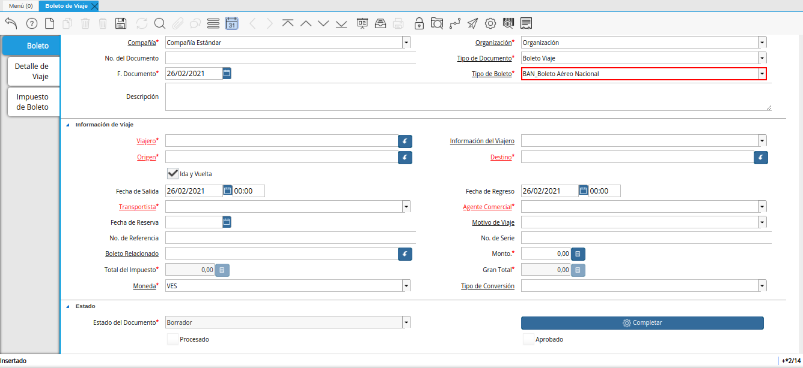
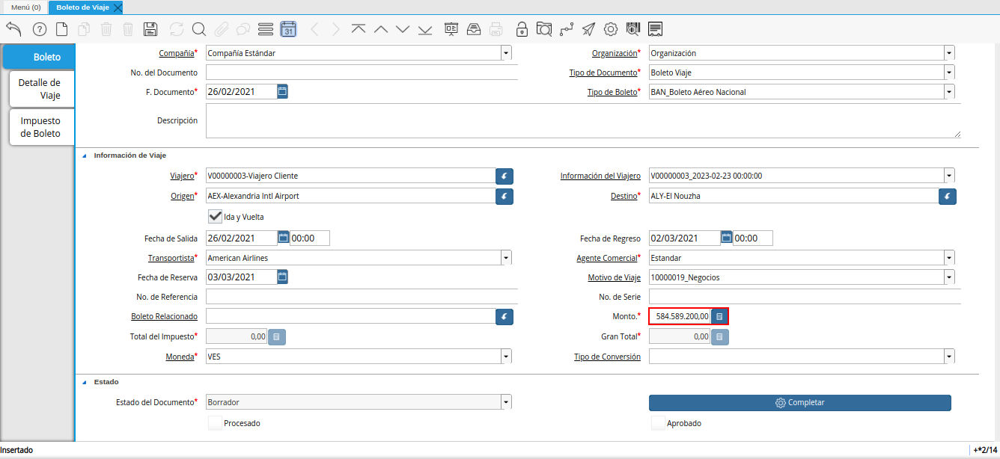
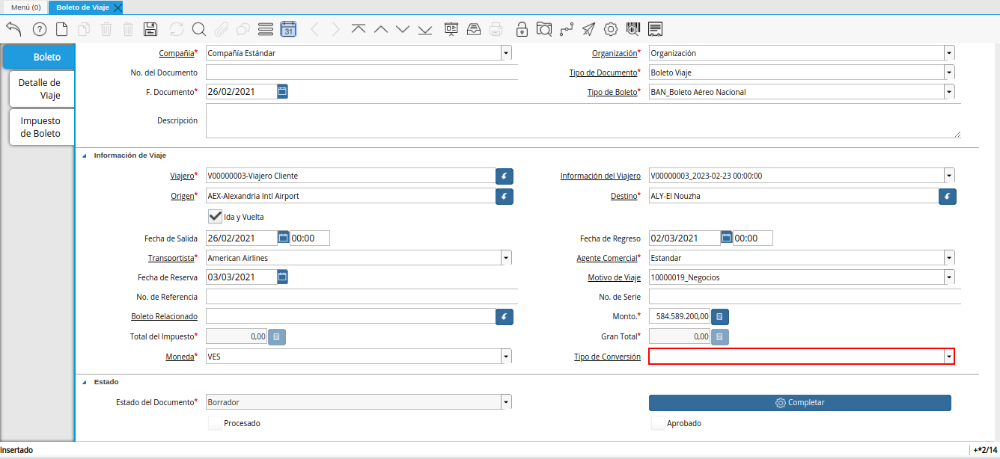
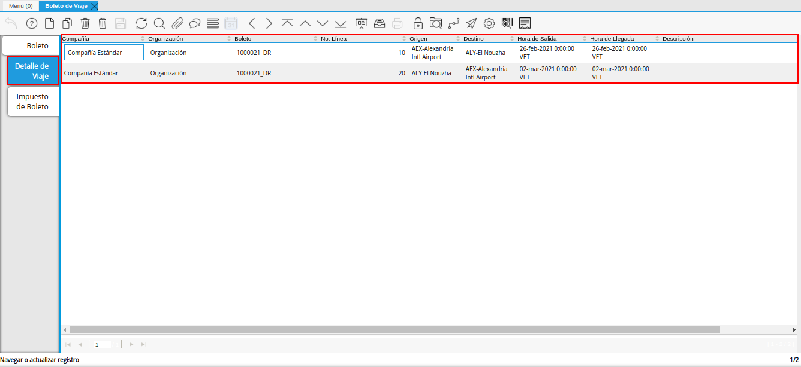
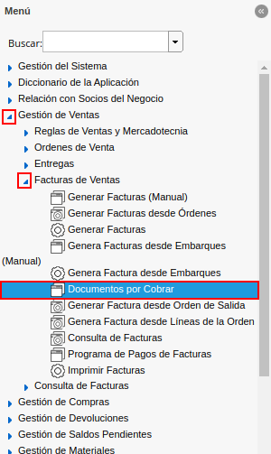
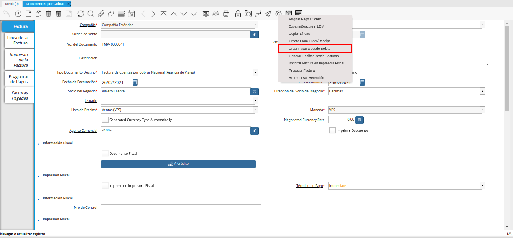
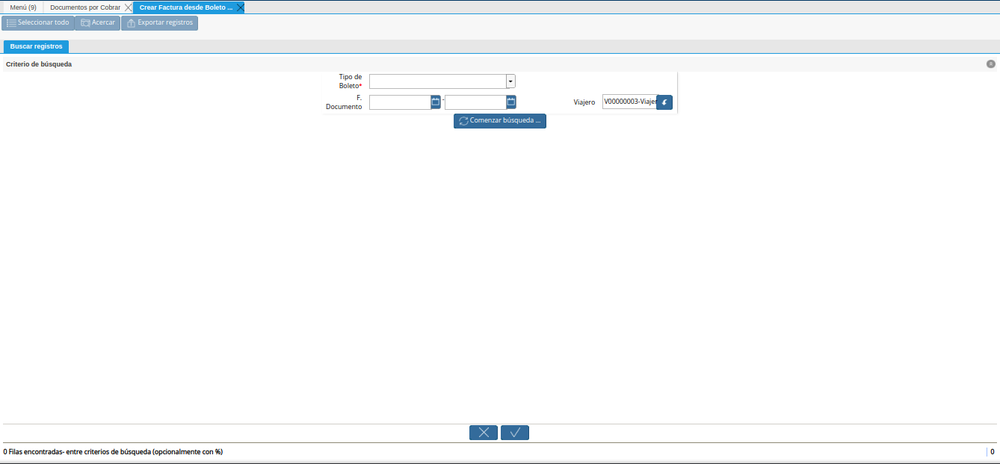
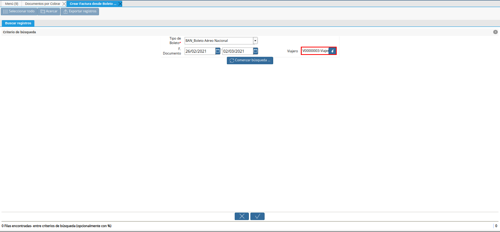
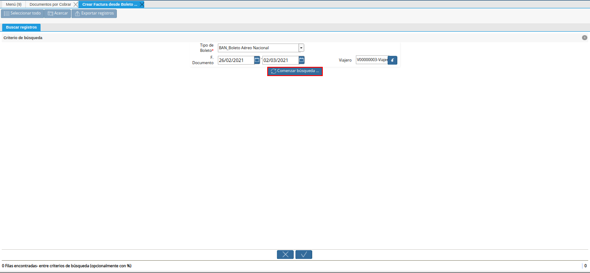
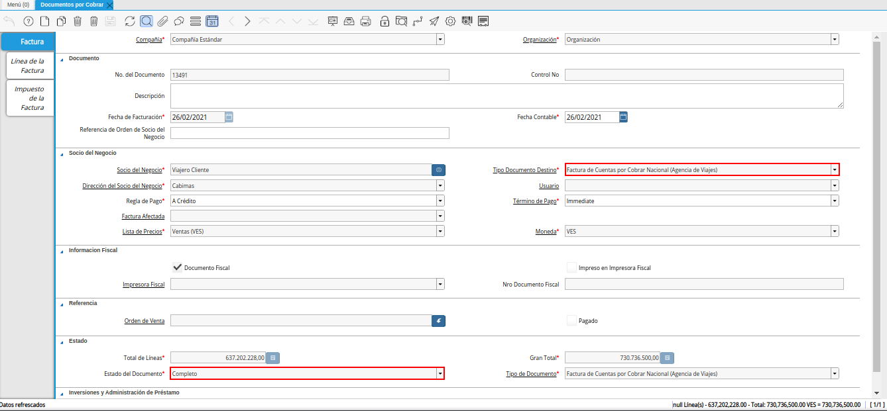

3.3. Boletería¶
El procedimiento de boletería parte de una previa configuración en la cual se debe contar con los siguientes puntos:
Viajero Debe estar registrado el socio del negocio cliente (viajero). De no cumplir con ello, se debe realizar el procedimiento explicado en el material Registro de Viajero.
Terminal Deben estar definidos los diferentes terminales de origen y destino de los viajes. De no cumplir con ello, se debe realizar el procedimiento explicado en el material Registro de Terminal.
Transportista Deben estar definidas las diferentes empresas responsables de realizar el viaje. De no cumplir con ello, se debe realizar el procedimiento explicado en el material Registro de Transportista.
Impuesto de Viaje Deben estar definidos los diferentes impuestos de viaje con los que trabaja la organización. De no cumplir con ello, se debe realizar el procedimiento explicado en el material Registreo de Impuesto de Viaje. Cada impuesto de viaje varia según el tipo de boleto.
Warning
Es importante resaltar que cada impuesto de viaje es configurado por su parte, indicando cual será calculado de manera automática y cual no. Si indica que será calculado de manera automática, se asigna el porcentaje a aplicar para el mismo.
Tipo de Boleto Deben estar definidos los diferentes tipos de boletos con los que trabaja la organización. En la configuración del mismo, se indica el producto, cargo e impuestos a aplicar por cada tipo de boleto. De no cumplir con ello, se debe realizar el procedimiento explicado en el material Registro de Tipo de Boleto.
Motivo de Viaje Deben estar definidos los diferentes motivos de viaje de los socios viajeros. De no cumplir con ello, se debe realizar el procedimiento explicado en el material Registro de Motivo de Viaje.
Como ejemplo se presenta el tipo de boleto “Boleto Aéreo Nacional”, en el cual se tiene configurado el producto “Servicio de Vuelo”, el cargo “Impuestos Incluidos” y los impuestos de viaje “AK”, “C2”, “EU”, “YN” y “Otros impuestos”.
A continuación se explica el procedimiento a seguir para realizar correctamente el proceso de boletería.
3.3.1. Registro de Boleto¶
Ubique y seleccione en el menú de ADempiere, la carpeta “Administración de Agencia de Viajes”, luego seleccione la ventana “Boleto de Viaje”.

Imagen 61. Menú de ADempiere
Podrá visualizar la ventana “Boleto de Viaje”, con los diferentes registros de boletos.

Imagen 62. Ventana Boleto de Viaje
Seleccione el icono “Registro Nuevo”, ubicado en la barra de herramientas de ADempiere y proceda al llenado de los campos correspondientes.

Imagen 63. Icono Registro Nuevo
Seleccione en el campo “Organización”, la organización para la cual se encuentra realizando el registro.

Imagen 64. Campo Organización
Introduzca en el campo “No. del Documento”, el número de documento correspondiente al registro que se encuentra realizando.
Note
Si no es ingresado ningún valor en este campo, al guardar el registro ADempiere asigna de manera automática un número de documento según la secuencia de registros que se tenga en el momento.

Imagen 65. Campo No. del Documento
Seleccione el tipo de documento a generar en el campo “Tipo de Documento”, la selección de este define el comportamiento del documento que se esta elaborando, dicho comportamiento se encuentra explicado en el documento “Tipo de Documento” elaborado por ERPyA.

Imagen 66. Campo Tipo de Documento
Seleccione en el campo “F. Documento”, la fecha en la cual se encuentra realizando el documento.

Imagen 67. Campo F. Documento
Seleccione en el campo “Tipo de Boleto”, el tipo de boleto que se encuentra realizando.
Note
Recuerde que puede consultar del material Registro de Tipo de Boleto, para conocer dicho procedimiento.

Imagen 68. Campo Tipo de Boleto
Introduzca en el campo “Descripción”, una breve descripción referente al registro que se encuentra realizando.

Imagen 69. Campo Descripción
Seleccione en el campo “Viajero”, el socio del negocio cliente viajero correspondiente al registro que se encuentra realizando.
Note
Recuerde que puede consultar del material Registro de Viajero, para conocer dicho procedimiento.

Imagen 70. Campo Viajero
Seleccione en el campo “Información del Viajero”, la información del viajero correspondiente al registro que se encuentra realizando.

Imagen 71. Campo Información del Viajero
Seleccione en el campo “Origen”, el origen del boleto.

Imagen 72. Campo Origen
Seleccione en el campo “Destino”, el destino del boleto.

Imagen 73. Campo Destino
El check “Ida y Vuelta”, se encuentra tildado por defecto para indicar que el boleto es de ida y vuelta.

Imagen 74. Check Ida y Vuelta
Seleccione en el campo “Fecha de Salida”, la fecha de salida para el boleto.

Imagen 75. Campo Fecha de Salida
Seleccione en el campo “Fecha de Regreso”, la fecha de regreso del viaje.
..note:
Este campo se debe llenar cuando el boleto sea de ida y vuelta.

Imagen 76. Campo Fecha de Regreso
Seleccione en el campo “Transportista”, el transportista responsable de la entrega del producto
Note
Recuerde que puede consultar del material Registro de Transportista, para conocer dicho procedimiento.

Imagen 77. Campo Transportista
Seleccione en el campo “Agente Comercial”, el agente comercial para la región de ventas.

Imagen 78. Campo Agente Comercial
Seleccione en el campo “Fecha Reservada”, la fecha reservada para el boleto.

Imagen 79. Campo Fecha Reservada
Seleccione en el campo “Motivo de Viaje”, el motivo del viaje.
Note
Recuerde que puede consultar del material Registro de Motivo de Viaje, para conocer dicho procedimiento.

Imagen 80. Campo Motivo de Viaje
Introduzca en el campo “No. de Referencia”, el número de referencia del socio del negocio cliente viajero.

Imagen 81. Campo No. de Referencia
Introduzca en el campo “No. de Serie”, el número de serie del producto.

Imagen 82. Campo No. de Serie
Seleccione en el campo “Boleto Relacionado”, el boleto relacionado al registro que se encuentra realizando.

Imagen 83. Campo Boleto Relacionado
Introduzca en el campo “Monto”, el monto del boleto.

Imagen 84. Campo Monto
En el campo “Total de Impuesto”, podrá visualizar el total del impuesto del boleto.

Imagen 85. Campo Total de Impuesto
Podrá visualizar en el campo “Gran Total”, el gran total del boleto.

Imagen 86. Campo Gran Total
Seleccione en el campo “Moneda”, la moneda correspondiente al boleto.

Imagen 87. Campo Moneda
Seleccione en el campo “Tipo de Conversión”, el tipo de conversión correspondiente al boleto.

Imagen 88. Campo Tipo de Conversión
Seleccione el icono “Guardar Cambios”, ubicado en la barra de herramientas de ADempiere.

Imagen 89. Icono Guardar Cambios
Al guardar el registro se crean de manera automática los registros de los detalles del viaje de ida y vuelta en la pestaña “Detalle de Viaje”.

Imagen 90. Pestaña Detalle de Viaje
De igual manera, se crean de manera automática en la pestaña “Impuesto de Boleto”, los registros de los impuestos con los que podrían trabajar los boletos. Dichos impuestos pueden variar dependiendo del tipo de documento utilizado al momento de crear el boleto.
Note
Recuerde que puede consultar del material Registreo de Impuesto de Viaje, para conocer dicho procedimiento.

Imagen 91. Pestaña Impuesto de Boleto
Regrese a la pestaña principal “Boleto” y seleccione la opción “Completar”.

Imagen 92. Pestaña Principal Boleto y Opción Completar
Seleccione la acción “Completar” y la opción “OK”.

Imagen 93. Acción Completar y Opción OK
3.3.2. Generar Factura desde Boleto¶
Ubique y seleccione en el menú de ADempiere, la carpeta “Gestión de Ventas”, luego seleccione la carpeta “Facturas de Ventas”, por último seleccione la ventana “Documentos por Cobrar”.

Imagen 94. Menú de ADempiere
Realice el procedimiento regular para crear una factura de cuentas por cobrar en la ventana “Documentos por Cobrar”, llenando solamente la información de la pestaña “Factura” y seleccionando en el campo “Tipo de Documeto Destino”, la opción “Factura de Cuentas por Cobrar Nacional (Agencia de Viajes)”. Dicho proceso se encuentra explicado de manera detallada en el material Registro de Documento por Cobrar.

Imagen 95. Pestaña Factura
Warning
El socio del negocio seleccionado en el documento por cobrar debe ser el mismo socio del negocio seleccionado en el boleto.
Luego de guardar el registro de los campos, seleccione el icono “Proceso” ubicado en la barra de herramientas de ADempiere.

Imagen 96. Icono Proceso
Despues, seleccione la opción “Crear Factura Desde Boleto”.

Imagen 97. Opción Crear Factura desde Boleto
Podrá visualizar la ventana del proceso con diferentes campos que le permiten al usuario filtrar la información en base a lo requerido.

Imagen 98. Ventana del Proceso Crear Factura desde Boleto
Seleccione en el campo “Tipo de Boleto”, el tipo de boleto desde el cual se requiere generar la factura.

Imagen 99. Campo Tipo de Boleto
Seleccione en el campo “F. Documento”, el rango de fecha para buscar los registros de boletos.

Imagen 100. Campo F. Documento
Seleccione en el campo “Viajero”, el socio del negocio por el cual requiere buscar los registros de boletos.
Este campo contiene cargada de manera predeterminada la información del socio del negocio seleccionado en la pestaña “Factura” del documento por cobrar. Si requiere generar la factura a un tercero, debe dejar el campo “Viajero” en blanco, para filtrar la búsqueda por todos los socios del negocio que se encuentren asociados a boletos.

Imagen 101. Campo Viajero
Seleccione la opción “Comenzar Búsqueda”, para realizar la búsqueda filtrando la información en base a lo seleccionado.

Imagen 102. Opción Comenzar Búsqueda
Seleccione el registro del boleto al cual le requiere generar la factura y luego seleccione la opción “OK”.

Imagen 103. Selección del Boleto y Opción OK
Seleccione el icono “Refrescar”, ubicado en la barra de herramientas de ADempiere para actualizar la ventana “Documentos por Cobrar” y sea cargada a la misma, la información seleccionada en el proceso “Crear Factura desde Boleto”.

Imagen 104. Icono Refrescar
Proceda a completar el documento por cobrar. Si desconoce dicho procedimiento, puede consultar el material Registro de Documento por Cobrar.

Imagen 105. Documento por Cobrar Completo
Seleccione el icono “Imprimir”, ubicado en la barra de herramientas de ADempiere para imprimir la factura generada.

Imagen 106. Icono Imprimir
Podrá visualizar la ventana “Factura de Ventas” con el reporte de la factura a ser impresa, donde debe seleccionar el icono “Imprimir” dicha ventana.

Imagen 107. Ventana Informe y Icono Imprimir